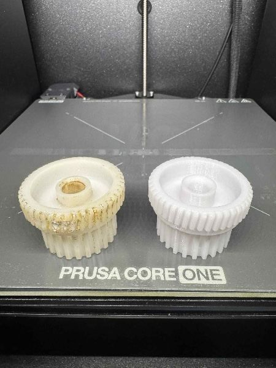
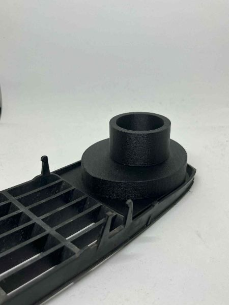

FDM 3D Printing
The most widespread 3D printing technology: a molten plastic filament, laid down layer by layer. From a PLA prototype to a PEEK aerospace part.

FDM in 3 steps
The filament melts
A spool of plastic feeds a heated nozzle that melts the material.
The nozzle traces
The nozzle lays down the material line by line, like a computer-controlled 3D pen.
Layer after layer
The part builds up layer by layer, from economical PLA to high-performance PEEK.
Your part
Send your file: we confirm that FDM is the right choice, or point you to another technology.
When to choose it?
Mounting bracketDrag to rotate
- Fast, low-cost prototypes
- Huge choice of materials, from PLA to PEEK and ULTEM
- Large parts (Modix Big Meter)
- Multi-colour and multi-material parts
- Visible layer lines
- Lower strength between layers: orientation matters
- Supports needed for overhanging areas
Our FDM machines
Bambu Lab H2C
Multi-material printing
View the sheet →
Bambu Lab X1C
3D printing for series
View the sheet →
Prusa Core One
Rapid industrial prototyping
View the sheet →
Modix Big Meter
Large-format 3D printing
View the sheet →
INTAMSYS Funmat HT
Industrial materials
View the sheet →Our FDM materials

PLA
Precise · Economical · Multi-colour
View the sheet →
PETG
Strong · Durable · Chemical-resistant
View the sheet →
ABS
Hard · Machinable · Heat-resistant
View the sheet →
ASA
UV-resistant · Outdoor · Durable
View the sheet →
TPU
Flexible · Elastic · Abrasion-resistant
View the sheet →
PP
Lightweight · Flexible · Chemical-resistant
View the sheet →
PA12-CF
Rigid · Lightweight · Technical
View the sheet →
PA12-GF
Stable · Robust · Industrial
View the sheet →
PPS-CF
High temperature · Chemical-resistant · Rigid
View the sheet →
PEEK
High performance · Chemicals · Wear
View the sheet →
PEKK
High performance · Non-flammable · Aerospace
View the sheet →
ULTEM (PEI)
Non-combustible · Rail · Aerospace
View the sheet →Compare to choose better
FDM vs SLS vs SLA
FDM, SLS or SLA (resin): which 3D printing technology should you choose?
Open the sheet →ComparisonPLA vs PETG
PLA or PETG: which one to choose? Full comparison of strength, temperature and cost, by O&D Impression 3D, your workshop in Welkenraedt (Liège).
Open the sheet →ComparisonABS vs ASA
ABS or ASA for your technical parts? Comparison of UV, thermal and mechanical resistance, by O&D Impression 3D, workshop in Welkenraedt (Liège).
Open the sheet →ComparisonPA12-CF vs PA12-GF
Carbon fibre or glass fibre for your Nylon PA12?
Open the sheet →ComparisonPPA-CF vs PPS-CF
PPA-CF or PPS-CF for your industrial parts? Discover our complete technical comparison: thermal, chemical and mechanical resistance in…
Open the sheet →ComparisonPEEK vs PEKK vs Ultem
PEEK, PEKK or Ultem for your high-performance parts?
Open the sheet →Completed projects

Polypropylene part for a speech therapist
Custom rehabilitation tool for a speech therapist, reproduced in polypropylene by 3D printing and adapted to patients' needs.
Open the sheet →
Mincer gear reproduced in 3D
Broken mincer gear reproduced in PLA: reverse engineered in 1 h, part ready in under 48 h.
Open the sheet →
Audi S3 parts reproduced in PAHT-CF
Reproduction of damaged Audi S3 parts in PAHT-CF and PLA: bumper grille and S3 logo covers.
Open the sheet →
Miniature rails for the Infrabel scale model
Miniature PLA rails 3D-printed for Infrabel's inauguration scale model.
Open the sheet →
Stool feet for holiday homes in Herve
40 cm stool feet in black PLA, custom-printed for Airbnb holiday homes in Herve: 24 h per part, free prototype.
Open the sheet →
Fence spike reproduced in ASA
Broken decorative fence spike, redesigned from photos and reprinted in UV-resistant ASA on a Bambu Lab X1C.
Open the sheet →A part to make?
Send your 3D file or describe what you need: instant quote with a file, custom quote within 24 h.